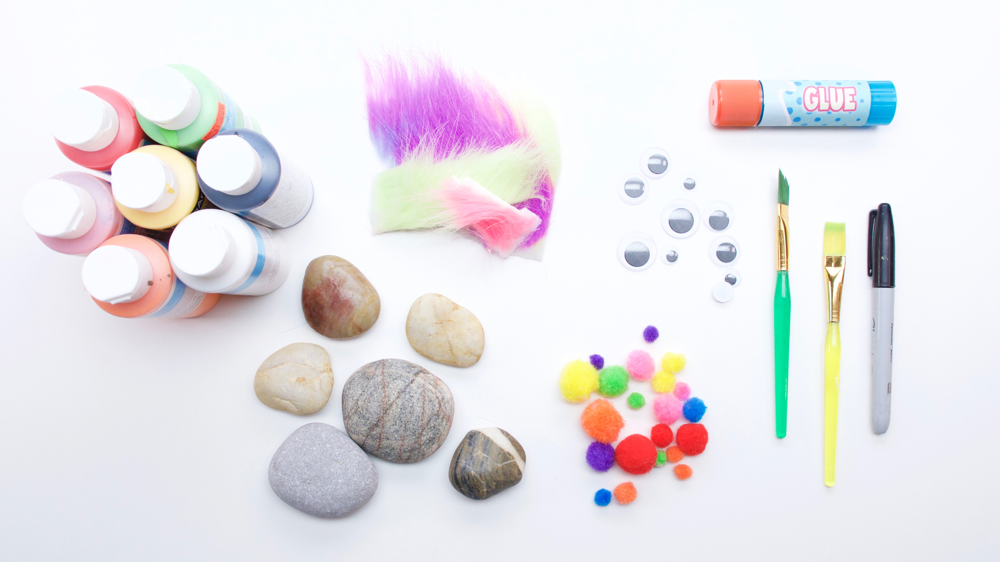
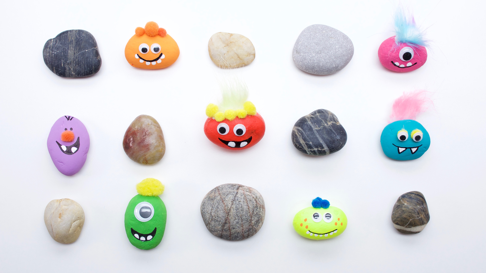

Pet Rock
Amount
1Items needed:
- 1 smooth round rocks
- multi-colored craft paint
- 2 googley eyes
- scissors
- glue stick
- pom poms
- permanent black marker
- paint brush
- cotton swabs
- fun fur
Instructions:
- Prime rocks with white craft paint.
- Paint the base color.
- Add details. Teeth are made by dipping the end of a cotton swab into the paint. Draw the fine lines with a permanent marker.
-
Glue on the eyes, pompoms, and fun fur for hair.
 